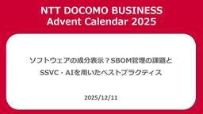
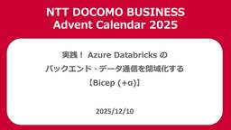
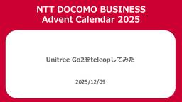
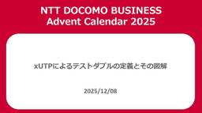
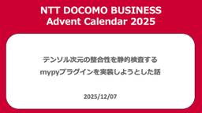

NTT docomo Business Engineers' Blog
https://engineers.ntt.com/
NTTドコモビジネス（旧NTT Com）のエンジニアによるブログです。
フィード

ソフトウェアの成分表示？SBOM管理の課題とSSVC・AIを用いたベストプラクティス 19
19
NTT docomo Business Engineers' Blog
SBOM（Software Bill of Materials）とは、ソフトウェアに含まれるコンポーネントの一覧表であり、近年の法統制によりその管理が求められています。本記事では、SBOM管理の必要性と現状の認知度についてお話しします。また、SSVCによる脆弱性評価とAIを活用した、効率的なSBOM管理のベストプラクティスについて解説いたします。 はじめに SBOM（Software Bill of Materials）とは SBOMの認知度 SBOM法統制とガイドライン SBOM管理の法統制が進む背景 OSS（オープンソースソフトウェア）の急速な普及 発見される脆弱性の爆発的な増加 現状考え…
2日前

実践！ Azure Databricks のバックエンド・データ通信を閉域化する【Bicep (+α)】 3
NTT docomo Business Engineers' Blog
この記事は、NTT docomo Business Advent Calendar 2025 10日目の記事です。 Microsoft の IaC 言語である Bicep (+ Azure CLI/Databricks CLI) を使って、Azure Databricks ワークスペースをデプロイし、そのバックエンド通信や Azure データサービスへの通信を閉域化する方法を紹介します。 また、その環境を使ったデータ収集の一例として、Azure Event Hubs を使ったプライベートなデータストリーミングを試します。 はじめに なぜこの構成を記事にするのか 今回の構成と前提 前提 Bice…
4日前

Unitree Go2をteleopしてみた 2
NTT docomo Business Engineers' Blog
この記事はNTT docomo Business Advent Calendar 2025 9日目の記事です。 Unitree Go2はROSの通信ミドルウェアとしてEclipse Cyclone DDSを利用していますが、DDSはNATを越えられないという課題があります。 この課題に対し、DDSをZenohにブリッジしてNAT越えを実現する事例がコミュニティでいくつか紹介されています（11, 22, 33）。 本記事ではこのアプローチをUnitree Go2に適用し、zenoh-plugin-ros2ddsを用いて Unitree Go2が扱うDDSメッセージをインターネット越しに送受信する…
4日前

xUTPによるテストダブルの定義とその図解 22
NTT docomo Business Engineers' Blog
この記事は、NTT docomo Business Advent Calendar 2025 8日目の記事です。 自動テストの文脈で、モックやスタブという用語を目にすることがあるかと思います。この用語は、人やテストフレームワークごとに異なった意味で使われることがあり、しばしば混乱を招いています。そして、そのような指摘をした上で概念の整理を図ったものとしてGerard Meszarosの書籍『xUnit Test Patterns』（xUTP）1とウェブサイト2があります。 xUTPでは、テスト対象（SUT）の依存コンポーネント（DOC）を置き換えるものを総称して「テストダブル」と呼び、その目的…
5日前

テンソル次元の整合性を静的検査するmypyプラグインを実装しようとした話 3
NTT docomo Business Engineers' Blog
この記事は、NTT docomo Business Advent Calendar 2025 7日目の記事です。 こんにちは。イノベーションセンターの加藤です。普段はコンピュータビジョンの技術開発やAI/機械学習（ML）システムの検証に取り組んでいます。 ディープラーニングの実装をしているときに、変数のshapeを管理するのはなかなか大変です。いつのまにか次元が増えていたり、想定外のshapeがやってきたりして実行時に落ちてしまった！というのは日常茶飯事だと思います。 こういった問題に対して静的解析で何とかできないかと試行錯誤した結果を共有します。 mypyプラグインを使うモチベーション my…
6日前

エンジニアがエンジニアに力を与えるプロジェクトの紹介
NTT docomo Business Engineers' Blog
この記事は NTT docomo Business Advent Calendar 2025 3 日目の記事です。 みなさんこんにちは、イノベーションセンターの @Mahito です。 普段は社内のエンジニアが働きやすくなることを目標に、コーポレートエンジニアのような活動やエンジニア向けイベントの企画・運営をしています。 今回は、上でも述べているように、 社内のエンジニアが働きやすくすることを目標に活動をしているイノベーションセンターの取り組み Engineer Empowerment プロジェクトについて紹介します。 NTTドコモビジネスの中で、エンジニアが働きやすくなるためにどのような活動…
11日前
持ち運べる OpenStack 環境をつくる
NTT docomo Business Engineers' Blog
この記事は、NTT docomo Business Advent Calendar 2025 2 日目の記事です。 Android 15 から Android 端末上で Linux 環境を動かすことが可能になりました。せっかくなので、 OpenStack をインストールして VM を動かしてみました。 はじめに スマホの Linux 開発環境に SSH する 開発環境を探検する OpenStack のインストール方法について DevStack を実行して minimal な OpenStack 環境をつくる スマホ OpenStack に VM を建ててみる トラブルシューティング Linux…
12日前
13年目の1年生――あれほど避けていたマネージャーになるまで
NTT docomo Business Engineers' Blog
この記事は、NTT docomo Business Advent Calendar 2025 1日目の記事です。 こんにちは、デジタル改革推進部の小林です。NTT docomo Business Engineers' Blogと改題してからは初の、アドベントカレンダーが始まりました。その1日目の記事です。 私は4月から現職のデジタル改革推進部に所属し、社内認証サービスのプロダクトオーナーをやっています。このサービスにより、NTTドコモビジネスの社員はPCや各種社内システムをひとつのIDでシームレスに利用できます。現在は私のほかメンバー4人と協力会社の体制で運営しています。 私は新卒で入社して以…
13日前
業務で進むLLM活用、その裏に潜む脅威とは？Microsoft 365 Copilotを介した攻撃検証（インターン体験記）
NTT docomo Business Engineers' Blog
こんにちは、NTTドコモグループの現場受け入れ型インターンシップに「D2：攻撃者視点に立ち攻撃技術を研究開発するセキュリティエンジニア」ポストで参加させていただきました、太田です。 本記事では、本インターンシップでの取り組みについて紹介いたします。 NTTドコモグループのセキュリティ業務、特にOffensive Securityプロジェクト（以下、PJ）に興味のある方、インターンシップの参加を検討している方などへの参考になれば幸いです。 OffensiveSecurityPJとは 参加経緯 インターンシップ概要 Microsoft 365 Copilotの悪用 Microsoft 365 Co…
16日前
AIで攻撃者視点を強化する：LLMによるRed Teamオペレーション高度化検討（インターン体験記）
NTT docomo Business Engineers' Blog
こんにちは、NTTドコモグループの現場受け入れ型インターンシップに「D2：攻撃者視点に立ち攻撃技術を研究開発するセキュリティエンジニア」ポストで参加させていただきました、島田です。 本記事では、本インターンシップでの取り組みについて紹介いたします。 NTTドコモグループのセキュリティ業務、特にOffensive Securityプロジェクト（以下、PJ）に興味のある方、インターンシップの参加を検討している方などへの参考になれば幸いです。 Offensive Security PJとは 参加経緯 インターンシップ概要 LLM応用によるRed Teamオペレーション高度化検証 Juicy 情報とは…
16日前
「話そう」をテーマにBTCON JP 2025で発表してきました（おまけつき）
NTT docomo Business Engineers' Blog
デジタル改革推進部の小林です。いまは社内認証サービス・基盤のプロダクトオーナーをやっています。5月まではイノベーションセンターにいました。 去る11月15日土曜日に開催されたBTCON JP 2025において、「現場とIT部門の橋渡しをして3000人の開発者を救った話」との題で登壇してきました。この記事では、ask the speakerのコーナーや、懇親会でお話しした内容を踏まえて、その発表では盛り込めなかった内容をお伝えします。 発表のあらまし 追加コンテンツ どうやるかは最後 会って話す 端からめくる 燃え尽きに注意 終わりに 発表のあらまし かつてこのブログの記事「エンジニアがエンジニ…
25日前
OsecTを船舶に適用可能にするための追加機能の開発に挑戦（インターンシップ体験記）
NTT docomo Business Engineers' Blog
はじめに こんにちは！NTTドコモビジネスの2025年夏の現場受け入れ型インターンシップに参加させていただきました、インターン生の竹田です。私は現在高専の専攻科1年生で、普段は船舶におけるサイバーセキュリティに関する研究活動を行っています。 この記事では、私が今回のインターンシップで取り組んだ業務体験内容について紹介します。 はじめに 参加のきっかけ インターンシップ概要 OTセキュリティとOsecTの概要把握 テーマ選定 検討1: 船舶での使用プロトコル調査 NMEA 0183 IEC61162-450 検討2: 現状の船内ネットワーク調査 検討3: 船舶pcapに対する現状のIDS製品の出…
1ヶ月前
SOUPS 2025でポスター発表してきた話&USENIX Security 2025参加レポート
NTT docomo Business Engineers' Blog
こんにちは、イノベーションセンターの田口、金井です。 普段はOffensive Security PJのメンバーとして活動しています。 この記事では2025年8月に開催されたSOUPS 2025でポスター発表したことおよび同時期に開催された USENIX Security 2025へ参加したことについて紹介します。 Offensive Security PJについて USENIX Securityについて SOUPSについて ポスター発表について 発表概要 発表の様子 カンファレンスの様子 セキュリティ分野の研究動向 会場の雰囲気 おわりに Offensive Security PJについて …
1ヶ月前
「生成AI × 数理最適化」が変える、次世代の業務デザイン
NTT docomo Business Engineers' Blog
本記事では、現在進行中で取り組んでいるテーマ「生成AI×数理最適化」に関する試みとして、生成AIを活用して数理最適化技術の実務適用を支援するアプローチを紹介します。例として、スーパーマーケットにおける在庫管理の効率化を取り上げ、その具体的な応用と効果について述べます。 はじめに 背景 数理最適化モデルの定式化と実装に伴う困難 生成AIの台頭 実現アプローチの検討 生成AI活用の全体像 在庫最適化の課題設定 実現までのステップ 1. 定式化支援エージェントによる定式化支援 2. 入力データ設計支援エージェントによるデータ設計支援 3. Node-AIを活用したデータの準備 4. コード生成エージ…
1ヶ月前
同じ脆弱性情報を使っているはずなのに！？なぜか発生した脆弱性の検知漏れ：パッケージの分類がもたらした落とし穴
NTT docomo Business Engineers' Blog
NTTドコモビジネスが開発しているSBOM管理ソリューション「Threatconnectome」において、Trivyと同じ脆弱性データベースを使用しているにもかかわらず、特定のパッケージで脆弱性検出漏れが発生した事例を紹介します。 はじめに 1. Trivyにおけるパッケージの分類について バイナリパッケージとソースパッケージについて バイナリパッケージ ソースパッケージ バイナリパッケージとソースパッケージの分類の意図 Trivyにおける脆弱性検出の仕組み Threatconnectomeにおける脆弱性の未検知問題の詳細 プロジェクトでの対応策 実施後の効果 まとめ 脚注 参考文献 はじめに…
1ヶ月前
vLLM Sleep Modeよるモデルのゼロリロード切り替え機能の検証
NTT docomo Business Engineers' Blog
こんにちは。NTTドコモビジネスの露崎です。本ブログではvLLMの本家コミュニティのブログで紹介されたvLLMのモデルのゼロリロード切り替え機能の概要に加えて本機能をContainerベースで検証した結果について紹介します。
1ヶ月前
手書き→活字変換モデルを学習しようとして上手くいかなかった話
NTT docomo Business Engineers' Blog
こんにちは。イノベーションセンターの加藤です。 手書きから活字へスタイル変換するモデルをFlow Matchingで学習しようとして色々試したものの上手くいかなかったため、試行錯誤の記録をブログの形で残したいと思います。 背景 上手くいかなかった手法たち 手法１：手書き文字分布から活字分布への変換 手法２：ControlNet学習 手法３：学習済みの活字生成モデルを手法１で転移学習する まとめ 背景 このモデルを学習しようとしたきっかけは手書き文字OCRの性能を向上させようという取り組みでした。OCRの難しい点として、現実のデータにはさまざまな特殊文字が現れるという問題があります。これら全ての…
2ヶ月前
オープントランスポンダーの世界 ― APNテストベッドで探る技術と運用手法(その1)
NTT docomo Business Engineers' Blog
イノベーションセンターの新井です。普段は全社検証網の技術検証、構築、運用を担当しています。私の所属するイノベーションセンターではこれまではイーサネット/IPレベルの検証網を運用して全社に提供していましたが、昨今の光伝送とIP系技術の融合の進展などにも対応して、さまざまなユースケースを検証・開発するために、光伝送に関する検証網(All Photonics Network Testbed。以下、APNテストベッド)も同一チームで構築・運用しています。今回から複数回に分けて現在取り組んでいるAPNテストベッドで用いている技術や運用手法を解説していきます。記事内では我々と同じようにイーサネット/IP技術にはある程度詳しいが光伝送技術の知識はそれほどでもない、という方向けに解説します。本記事のサマリーです。- 光伝送ネットワーク(APN:All Photonics Network)の検証網、APNテストベッドについて連載します。- 連載1回目の本記事では、光伝送のオープン化の全体像とトランスポンダーにおけるオープン化の進展について紹介します。- 特にIP over DWDM関連やホワイトボックストランスポンダーのアーキテクチャーについて解説し、それらを使った運用手法の一端を紹介します。
2ヶ月前
セキュリティ若手の会第3回イベント協賛＆参加レポート
NTT docomo Business Engineers' Blog
こんにちは、イノベーションセンターの二瓶・神田です。 ドコモグループ（NTTドコモ・NTTドコモビジネス）はゴールドスポンサーとして、2025年8月2日に開催された第3回 セキュリティ若手の会に協賛しました。 この記事では、スポンサーの立場から見た当日の様子やスポンサー講演の内容について紹介します。 はじめに：セキュリティ若手の会について 公式イベント開催記 当日の様子 LLMセキュリティの攻防入門 〜ガバナンスと脅威対策〜 オフェンシブセキュリティ入門 ～攻撃者目線でセキュリティ対策を考えよう～ NTTドコモビジネスの業務紹介 おわりに お知らせ 第4回 セキュリティ若手の会（LT&交流会）…
2ヶ月前
2025年度情報セキュリティ部のインターンシップの様子を紹介します！
NTT docomo Business Engineers' Blog
はじめに こんにちは、NTTドコモビジネス（旧 NTT コミュニケーションズ）情報セキュリティ部です。 今年、NTTドコモビジネス 情報セキュリティ部のインターンシップには、5つのポストに対して7人のインターン生に来ていただき、2週間にわたるプログラムに取り組んでいただきました！ インターン生には、ポストの内容、得た学び、研究と現場の違いといった内容をテキストにまとめてもらいました。この記事ではそれらをポストごとにご紹介します。 はじめに インターンシップ参加者紹介 ポスト1: ネットワークセキュリティ製品を活用したデータ分析、実装および運用高度化 ポストの紹介 業務内容 IoC 調査 網内外…
2ヶ月前
Interop Tokyo 2025のShowNetへコントリビュートしたIOWN APN
NTT docomo Business Engineers' Blog
はじめに みなさん、こんにちは。イノベーションセンター IOWN推進室の工藤です。 IOWN推進室では、IOWN APNを体験できる基盤の整備を進めており、その構築や運用などを担当しています。 先日開催されたInterop Tokyo 2025（会場：幕張メッセ、会期：2025年6月11日〜13日）のNTT ドコモビジネスのブースでは、IOWNを利用した「ハイブリッドトラベル」をはじめとする未来の体験を展示し、多くの方にお立ち寄りいただきました。（ブースの展示内容についてはこちらのニュースリリースをご覧ください） 一方で、ブースでの展示とは別に、イベント全体の通信を支える大規模な実証実験ネット…
2ヶ月前
生成 AI からセキュリティまで！数年ぶりのオフライン開催 Tech-Night イベントレポート
NTT docomo Business Engineers' Blog
NTT ドコモビジネスではエンジニアコミュニティイベント、 Tech-Night/Tech-Midnight を定期的に開催しています。 普段はオンラインで実施していましたが、今回は数年ぶりにオフライン会場を用意し、オフラインとオンラインのハイブリッド形式で実施しました。発表を会場とオンライン会議双方へ配信した裏話と併せて、今回の発表内容について紹介します。 はじめに Tech-Night とは 会場の様子 Tech-Night の発表内容 Heuristic な Contest 参加のすゝめ (と生成AIでのアプローチ) オンラインカジノの闇 （の入口） Socks Proxy がつらい チ…
2ヶ月前
Telegramを使ったサイバー犯罪グループの調査分析に挑戦！（インターンシップ体験記）
NTT docomo Business Engineers' Blog
こんにちは、NTTドコモビジネスの現場受け入れ型インターンシップで「脅威インテリジェンスを生成・活用するセキュリティエンジニア/アナリスト」として参加させていただきました、大学院1年生の脇本です。このたびインターンシップを通してさまざまな経験をさせていただきましたので、その中でも特に印象的であった「Telegramチャンネルおよびグループの調査・分析」という内容を本記事で紹介させていただきたいと思います。
2ヶ月前
MIRU2025参加レポート
NTT docomo Business Engineers' Blog
こんにちは、イノベーションセンターの加藤・岡本です。普段はコンピュータビジョンの技術開発やAI/MLシステムの検証に取り組んでいます。7月29日から8月1日にかけて、国内のセンシング技術や画像処理関連の主要な学会であるMIRU（画像の認識・理解シンポジウム）が開催され、NTTドコモビジネスからはポスター発表で参加しました。本稿ではMIRU2025で気になった発表をいくつか紹介したいと思います。 MIRU2025概要 特殊な光学機器を用いた研究 1. イベントカメラを用いた可視光通信の高速化 (兵庫県立大学) 2. 符号化環境照明を用いた民生用カメラ撮影に対する情報埋め込みの実現 (大阪大学、Y…
3ヶ月前
Gemini でエンジニアの日報を自動生成！スクラムの情報共有が驚くほど楽になる
NTT docomo Business Engineers' Blog
こんにちは。クラウド&ネットワークサービス部で SDPF のベアメタルサーバの開発をしている山中です。 先日、Google Workspace で利用できる Gemini API を活用して、日々の業務ログから日報を自動生成し、Slackに自動投稿する仕組みを構築しました。 その具体的な方法と、実際に導入してわかった想像以上の効果をご紹介します。 デイリースクラムの悩み、AIで解決しませんか？ やったこと：情報を集めて Gemini に日報を書かせる 1. 各種ツールから活動ログを収集 2. イベント情報を時系列で整理 3. プロンプトを作成し Gemini API を実行 4. Slack …
3ヶ月前
GitHub Copilot code review にブログ記事をレビューしてもらう
NTT docomo Business Engineers' Blog
みなさんこんにちは、イノベーションセンターの @Mahito です。 普段は社内のエンジニアが働きやすくなることを目標に、 コーポレートエンジニアのような活動やエンジニア向けイベントの企画・運営をしています。 今回は、本 NTT docomo Business Engineers' Blog のレビューに、 GitHub Copilot code review を利用し始めたことと、その学びについてお話します。 なお、GitHub Copilot code review を導入以降は投稿がないので、 これが GitHub Copilot code review の初レビュー記事となっております…
3ヶ月前
Whisperによる映像文字起こしの精度をLLMとOCRの力で向上させる
NTT docomo Business Engineers' Blog
イノベーションセンターの加藤です。この記事ではWhisperによる音声認識の前処理と後処理にLLMとOCRを組み込むことで、映像の文字起こし精度の向上を図った際の検証結果を紹介します。 Whisperとは OCRの結果を盛り込み専門用語を認識させる 大規模言語モデルで全体の文章を調整する 各アプローチの融合 結果の考察 まとめ Whisperとは Whisper1はOpenAIによって提供されているオープンソースの音声認識モデルです。 色々なサイズのモデルが提供されており、最も大きいモデルであるlarge-v3は日本語を含む多言語に対応し高い認識精度を誇ります。 しかしもちろん完璧ではなく、W…
5ヶ月前
JSAI2025参加レポート
NTT docomo Business Engineers' Blog
こんにちは、イノベーションセンターのメディアAI プロジェクト（以下、PJ）の小林、加藤、岡本です。普段はコンピュータビジョンの技術開発やAI/機械学習（ML）システムの検証に取り組んでいます。 我々メディアAI PJでは5月27日から30日にかけてグランキューブ大阪で開催されたJSAI2025（2025年度 人工知能学会全国大会）に参加しました。本記事ではJSAI2025で発表された「画像・3D AI応用関連」、「VLM(Vision Language Model)」、「ハルシネーション対策」に関する興味深かった研究をいくつか紹介したいと思います。 目次 目次 JSAI2025とは 画像・3…
5ヶ月前
全国の放送局からの映像を ShowNet へ伝送するネットワークのアーキテクチャ紹介 ~Interop Tokyo 2025~
NTT docomo Business Engineers' Blog
はじめに 背景 アーキテクチャ紹介 知見・ノウハウ まとめ はじめに こんにちは、イノベーションセンターの村田です。 NTTドコモビジネス株式会社は、日本最大級のネットワーク展示会である 「Interop Tokyo 2025（会場：幕張メッセ、会期：2025年6月11日〜13日）」 において構築される ShowNet に対し、全国の放送局からの映像を伝送するネットワークの一部をコントリビューションしました。 本記事では、映像伝送を実現したアーキテクチャ、およびその過程で得られた知見・ノウハウをお伝えします。 背景 Interop の準備から本番までは、次の3期間に分かれて進行します。 全国の…
5ヶ月前
NTT ComはNTTドコモビジネスに変わります
NTT docomo Business Engineers' Blog
NTTコミュニケーションズ開発者ブログチームの小林です。 私たちNTTコミュニケーションズ株式会社は、明日2025年7月1日より社名をNTTドコモビジネス株式会社と改め、NTTグループの法人向け総合ICT事業の中核として新たな出発を迎えることとなりました。 www.ntt.com これに伴い、1999年の設立より親しまれてきたロゴマーク（シャイニングアーク）と、NTT Comの名称については、本日で利用を終了します。 NTT Comの設立は、ちょうど26年前の1999年7月1日でした。長距離・国際通信事業を担う存在としてスタートを切り、いまその歴史に区切りを迎えることとなります。音声通信と固定…
5ヶ月前